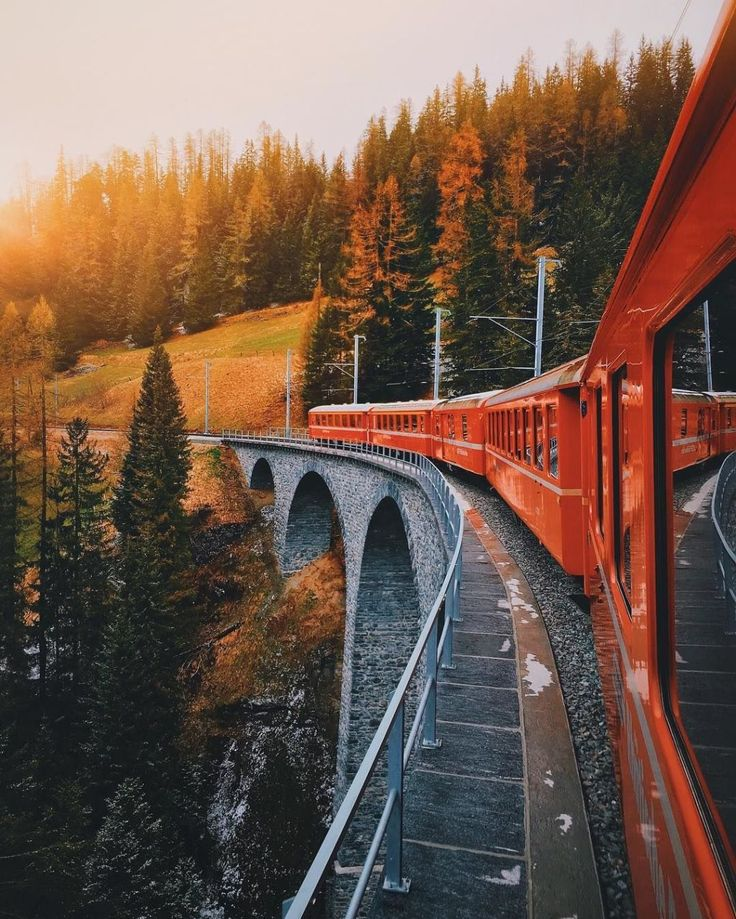

Switzerland, often dubbed the "Land of Enchantment," is a country that embodies the very essence of charm, precision, and natural beauty. Nestled in the heart of Europe, this small but mighty nation has captured the imagination of travelers for centuries. From its majestic Alpine peaks to its pristine lakes and charming villages, Switzerland is a land that offers a truly unique and captivating experience.
One cannot speak of Switzerland without mentioning its unparalleled natural beauty. The Swiss Alps, with their snow-capped peaks and dramatic valleys, stand as a testament to the grandeur of nature. The Matterhorn, one of the world's most iconic mountains, rises proudly above the town of Zermatt, inviting mountaineers and adventurers to conquer its formidable slopes. The shimmering lakes, such as Lake Geneva and Lake Lucerne, offer tranquility and reflection amidst the stunning landscapes.
Switzerland's history is as diverse as its landscapes. The country's medieval towns, with their cobbled streets and well-preserved architecture, transport visitors back in time. The Swiss Confederation, a unique and enduring political system, has guaranteed centuries of peace and neutrality, making Switzerland a sanctuary for diplomacy and international cooperation.
Swiss culture is a harmonious blend of tradition and innovation. Precision, punctuality, and cleanliness are not just values; they are a way of life. The Swiss transportation system is a testament to efficiency, allowing travelers to explore the country with ease. Switzerland's dedication to environmental sustainability is evident in its pristine landscapes and commitment to green initiatives.
While the iconic destinations like Zurich, Lucerne, and Interlaken are well-known, Switzerland holds many hidden treasures. The quaint villages of the Appenzell region, the artistic enclave of Basel, and the medieval charm of Gruyères invite exploration beyond the tourist trail.
